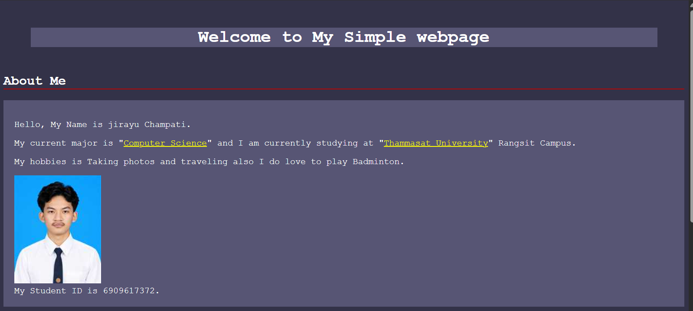
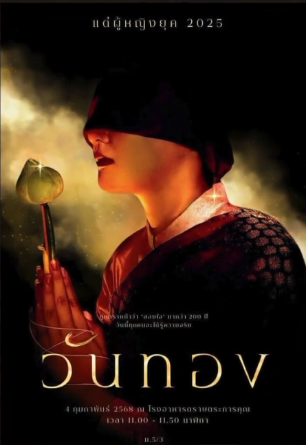
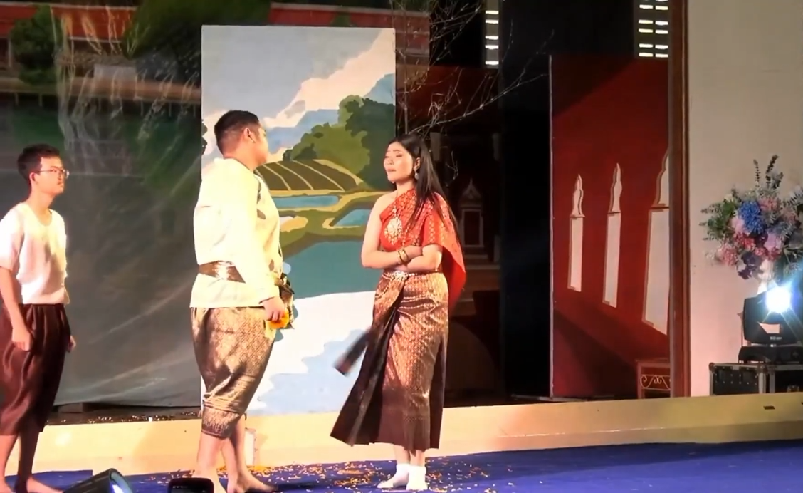

About Me
สวัสดีครับผมชื่อ จิรายุ ชำปฏิ ชื่อเล่นพอตเตอร์ รหัสนักศึกษา 6909617372
ปัจจุบันเป็นนักศึกษาในสาขาวิทยาการคอมพิวเตอร์ที่มหาวิทยาลัยธรรมศาสตร์
ตัวผมมีความสนใจด้านการทำเว็บไซต์เพื่อนำไปเป็นผลงานให้กับตัวเอง
ยินดีที่ได้รู้จักนะครับ
Portfolio CS100
ผลงานที่ผมทำในวิชา CS100 เป็นการทำเว็บไซต์ด้วย HTML และ CSS โดยผมได้ทำเว็บไซต์เกี่ยวกับการแนะนำตัวเอง
Title: My_Simple_Webpage
Type: Course Assignment
Date: 30 Aug 2026
Role: Individual Developer
Description: พัฒนาเว็บไซต์อย่างง่ายโดยใช้ HTML และ CSS เท่านั้น
Skills: HTML, CSS
Reflection: ได้เขียน HTML และ CSS ทั้งยังได้เรียนรู้การทำงานร่วมกันของ HTML และ CSS ปัญหาที่พบคือการจัดองค์ประกอบหน้าเว็บไซต์ให้ผู้อ่านเข้าใจง่ายและสวยงาม ผมรับมือด้วยการหาเว็บไซต์มอื่นๆมาอ้างอิงเป็นตัวแบบ หากจะพัฒนาผลงานนี้ต่อก็จะปรับให้หน้าเว็บมีความ Responsive
Evidence:

ศึกษาปริทรรศน์
เป็นผลงานการแสดงที่ผมได้มีส่วนร่วม
Title: วันทอง
Type: การแสดงละครเวที
Date: 4 Feb 2025
Role: นักแสดงสมทบ
Description: เป็นตัวสมทบในการแสดงช่วงต้นของการแสดง
Skills: การแสดง, การทำงานร่วมกับผู้อื่น
Reflection: ผมได้มีส่วนร่วมในการร่างฉากและลงสีของฉากละครเวที ได้เรียนรู้การทำงานร่วมกับผู้อื่น สิ่งที่ท้าทายของงานนี้คือการทำ ฉาก การคิดท่าทางการแสดง ทุกอย่างเหล่านี้ให้เสร็จทันเวลาก่อนจะขึ้นแสดงจริงในระยะเวลา 6เดือน อีกทั้งการแสดงยังต้องไม่เกิน40นาที โดยพวกเรา 5/3 ได้รับมือด้วยการแบ่งหน้าที่กันเป็น 3กลุ่ม โดยมี กลุ่มที่คอยหาเช่าอุปกรณ์ กลุ่มที่ทำฉาก และ กลุ่มที่คิดท่าการแสดง หากจะพัฒนาการแสดงนี้พวกเราคงอยากให้ฉากมีความสวยงามมากขึ้นใส่ลูกเล่นของการแสดงให้มากกว่านี้
Evidence:


รับชมได้ที่: วันทอง 5/3 โรงเรียนตราษตระการคุณ 2568